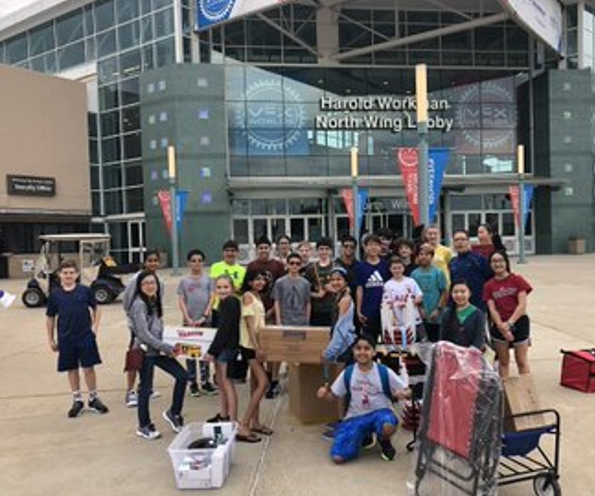

Ridgely Middle School Robotics
Go Ridgely Stags!
Our Story

Who Are We?
We are the RMS (Ridgely Middle School) Robotics team! We create,
program, and compete with robots against robots. We have multiple IQ teams along with a couple of VRC teams.
Students who participated in robotics can better succeed in high school and other activities. Our
teams have won many competitions and gone to states. Some have even gone to worlds!
What does Robotics help
Robotics improves cooperation and teaches kids knowledge about basic programming, design, and the processes of trial and error.
How has COVID-19 affected us?
We are adjusting to the COVID situation by meeting online. We are unable to build
robots this year, but we can participate in online challenges. We have groups that are doing
different online challenges. To maintain and gain skills, we would like a 'normal' robotics session. We will continue to help students develop strong characteristics to later help them in high school.
Who are our influencers?
This has been a long journey. All of our robotics members have faced difficult journeys.
We've had robots break, codes get deleted, batteries die, etc. Our peers and teachers have guided us through
the difficult times when we thought all was lost. Our teachers, Ms. O'Melia and Mr. Kallaur, come to every competition
and practice, giving us advice and support. Our 8th grade members are also assisting behind the scenes. From
giving examples of old award-winning notebooks to advice on robots or interview questions, they have helped us a lot. If we had a
question about the game, they would be the first to answer using their past experiences. Even some alumni
still come by to help us learn! Mr. Kallaur and Ms. O'Melia have always made us feel welcome at robotics.
Competitions & Awards

Last school year (2019-2020) three of our metal teams made it to Worlds by winning the Design Award, winning Skills, and becoming
Tournament Champion . Unfortunately, due to COVID-19, we were unable to go. We have had VEX IQ get into states as well, but because of COVID-19, teams are not allowed to
go this year. In the 2017-2018 school year, all 9 teams qualified for states.
Everybody was extremely happy. All teams had won the Design Award while 952J had won the Design and Teamwork
Challenge Award.


Teams
Ridgely offers both IQ and VCR teams. The IQ teams consist of 6th and 7th graders while the
VRC teams comprise of 8th and some lucky 7th graders. You will learn how to code, build, and take
organized notes in engineering notebooks. The majority of our teams are very successful. most make it to the states
and some into worlds!
Vex IQ
Unfortunately, we cannot have official teams this year due to COVID-19, but we had
experienced many things last year that helped us grow. Last year, an IQ team was able to get 102 points at a
competition. That team was called 952G. They went through many variations of robots. At the last
competition, the team had not expected to score 60 points. 952G had lost most of their hope due to losing
their past competitions, but their hard work had finally gotten them somewhere. 952G worked hard with their
allies to rack up points and found that they had qualified for the finals. 952G worked efficiently with
their allies and racked up many points. In the end, they scored 102 points! Even though 952G came in second
place, their hope and morale was boosted. The team learned a lot and came into metal stronger than ever!
Another experience was two years ago with 952J. They went through many challenges throughout the
year. They had made PowerPoints, practiced interviews, and made improvements to their robot multiple times
throughout the year. They had one competition when their robot completely fell apart about five minutes
before their first competition. Only two members were in attendance at that meet, so they had to work
together to make a quick push-bot that would support their alliance and allow them to get more points. They
remained in the top ten teams for a while, but in the end, they were placed around twentieth place. Overall,
they did a good job, but they, unfortunately, didn't qualify for the states yet. They only had one more
competition left. In their last competition, one team member was unable to make it, but this didn't stop
them from doing their best. They made a PowerPoint and presented it to the judges, explaining their plans,
strategies, each member's strengths as well as weaknesses, and any hardships they faced or future
improvements they were willing to make. They had practiced interview questions and strategies so they could
make a good impression on the judges. This allowed them to get a second interview. After doing all of that,
the only thing they could do was wait. During that time, they had about seven competitions. They
participated in skills and got very high points. This competition was probably their most successful out of
all. They were paired with good teams that cooperated with them. Eventually, they were able to get into the
finals in eleventh place! They had one more competition left, and they were placed with a team that was
relatively on the same skill level as them. They got all of the bonus points and were able to run a perfect
match. Their score was even better! They were now in the first place, but there were still teams that had to
compete. Luckily for them, no one was able to score higher than them, so they had won the Teamwork
Challenge. Because of this, since they were first in states and a different RMS team was second, they were
able to qualify as well. 952J also won the design award for the competition. When they went to the states,
they were ranked fortieth out of the forty-two teams participating, but they still had fun! One RMS Robotics
team was able to qualify for worlds that year along with the VCR teams that had already participated in
states. Overall, 952J had fun that year and learned a lot!
Our Program
Ridgely Robotics is located at 121 E Ridgely Rd, Lutherville Timonium, MD 21093. The
robotics club allows 6th, 7th, & 8th graders to join after going through a try-out that normally happens
around October. If you wish to join a VRC team you must have at least one year of experience with Ridgely
Robotics. Anyone who passes the audition starts on an IQ team. Ridgely also offers a robotics
summer camp in the case that you aren't zoned for Ridgely Middle School. For more information, you can go to
the LTRC website or contact Ridgely Middle School. Through this club you can make new friends, work on
communication and cooperation while having fun with the competitive game. Hope to see you there! Please
refer to the 'Help Us' page to reach the Ridgely Middle School Official Website for more information!
Help Us
RMS Home Page
For Ridgely Robotics to stay strong, we need help from supporters like you. This link will
lead you to the RMS home page where you can contact Ms. O'Melia and Mr. Kallaur (our coaches). You can also
search for our robotics club on the Ridgely Website. We are always looking for more opportunities to grow.